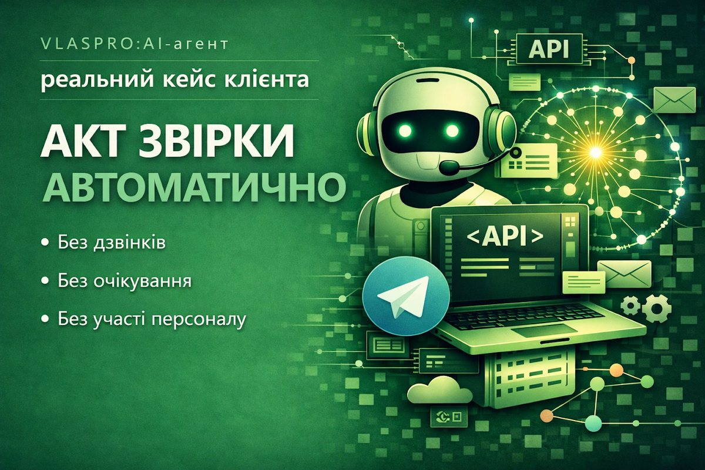

Кейс 01
Функціонал "Акт звірки автоматично в Telegram"
Клієнт звернувся із типовою задачею: бухгалтерія регулярно отримує запити від контрагентів на акти звірки. Щоразу дзвінок або лист, ручне формування документа, надсилання. Десятки разів на тиждень, більше 300 актів на місяць.
Ми автоматизували цей процес повністю, створивши Telegram-бота на базі власного програмного рішення, який дозволяє клієнтам нашої компанії самостійно формувати та отримувати “Акти звірки”.
Детальніше про кейс
Цей бот ми інтегрували з обліковою системою компанії, і тепер контрагенти нашої фірми самостійно обирають потрібний період та миттєво отримують акти звірки у PDF-форматі. Без дзвінків. Без очікування. Без участі персоналу.
Результат для компанії:
- Економія часу бухгалтера та зменшення кількості ручних операцій;
- Підвищення рівня сервісу для клієнтів;
- Зниження людського фактору та помилок при формуванні документів;
- Зручність та швидкість документообігу;
- Доступність 24/7
Цей кейс - приклад того, як AI-агенти можуть трансформувати бізнес-процеси підприємства, зробити їх більш ефективними та клієнтоорієнтованими.